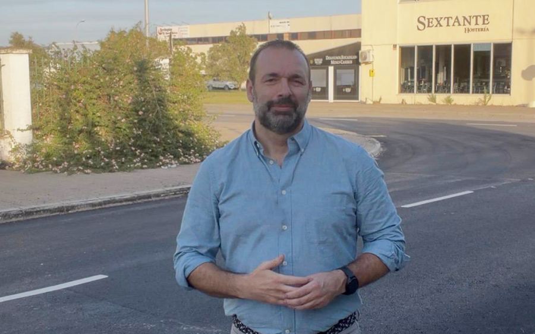
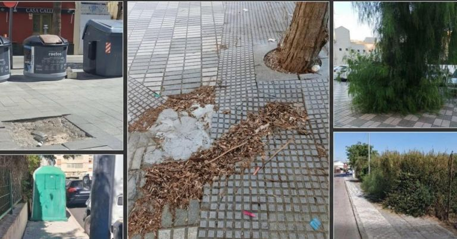
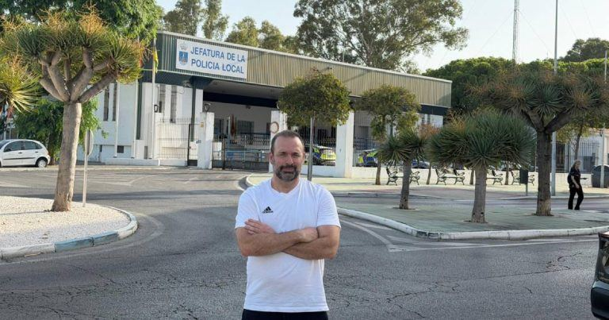
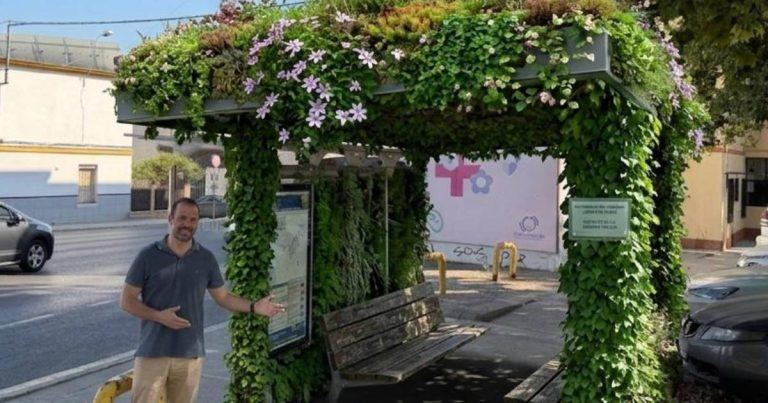
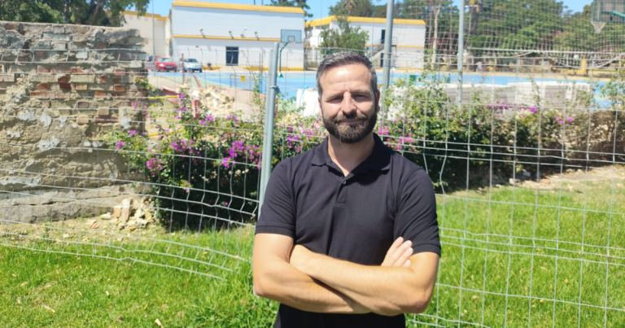

Beardo vota en contra de crear una Mesa de trabajo por la Vivienda
El Gobierno municipal tumba también la propuesta de crear una Mesa del Centro Histórico, rechazando dos iniciativas de 100x100 Unidos Portuenses para fomentar la participación ciudadana.
Leer más
100x100 Unidos Portuenses lamenta que el Gobierno de Germán Beardo haya votado en contra de las dos propuestas presentadas al último Pleno para impulsar una Mesa Municipal de la Vivienda y una Mesa del Centro Histórico.
La primera iniciativa pretendía reunir a los grupos políticos, asociaciones vecinales, entidades sociales y profesionales del sector para compartir diagnósticos, plantear soluciones y hacer seguimiento de las actuaciones municipales en materia de vivienda. Una propuesta que contrasta con lo que ocurre en Jerez, también gobernado por el Partido Popular, donde la alcaldesa María José García-Pelayo ha impulsado recientemente una Mesa Local por la Vivienda.
“No entendemos que algo que el PP considera útil en Jerez aquí se rechace. La vivienda es una de las principales preocupaciones de los portuenses y creemos que no basta con los anuncios del alcalde. Hay que escuchar, compartir información y contar con quienes conocen de primera mano el problema”, señala Javier Botella.
La segunda propuesta planteaba crear una Mesa del Centro Histórico para dar voz a vecinos, comerciantes, asociaciones y profesionales, y abordar conjuntamente cuestiones como la rehabilitación, la conservación del patrimonio, la recuperación residencial y el comercio de proximidad.
Desde 100x100 Unidos Portuenses recuerdan que la participación ciudadana no es una concesión de ningún Gobierno. El artículo 69 de la Ley de Bases del Régimen Local establece que las corporaciones locales deben facilitar la participación de los ciudadanos en la vida municipal, mientras que su artículo 70 bis contempla la existencia de órganos y procedimientos adecuados para hacerla efectiva. En la misma línea, la Ley 7/2017 de Participación Ciudadana de Andalucía reconoce expresamente mecanismos como consejos, comisiones y mesas de debate.
“No pedíamos que el Gobierno aceptase todas las propuestas que pudieran surgir, sino que estuviera dispuesto a escuchar y a trabajar con los demás. El futuro de El Puerto no puede depender exclusivamente de los anuncios del Gobierno municipal. También necesita transparencia, diálogo y participación”, concluye Botella.

100x100 Unidos Portuenses propone ampliar las salas de estudio y crear nuevos espacios de trabajo colaborativo en El Puerto
Francisco Belaustegui: “No basta con mantener las salas que tenemos; hay que planificar su ampliación y adaptarlas a las necesidades reales de los estudiantes”.
Leer más
100x100 Unidos Portuenses llevará al próximo Pleno municipal una moción para impulsar la mejora y ampliación de los espacios públicos destinados al estudio y la formación en El Puerto de Santa María.
La iniciativa plantea ir más allá de las reivindicaciones relacionadas con los horarios y el funcionamiento de las salas de estudio que ya se abordaron en anteriores propuestas. En esta ocasión, el objetivo es analizar la capacidad real de las instalaciones municipales, conocer su nivel de ocupación y determinar si los recursos disponibles responden a las necesidades actuales de estudiantes y opositores.
La formación considera necesario contar con un diagnóstico actualizado que permita conocer el número efectivo de puestos, los horarios, los niveles de afluencia y la posible demanda que no está siendo atendida. A partir de esa información, propone estudiar la habilitación de nuevos espacios y evaluar posibles mejoras en los horarios, especialmente durante los periodos de exámenes.
El edil, Francisco Belaustegui, señala que “no podemos limitarnos a tener unas cuantas salas abiertas y dar por hecho que el servicio está cubierto. Hay que saber cuántas personas las utilizan, cuándo se quedan pequeñas y qué alternativas podemos ofrecer. La planificación debe hacerse pensando en los estudiantes y no simplemente en los recursos que tenemos actualmente”.
La moción también plantea ampliar el concepto de estos equipamientos municipales. La propuesta contempla estudiar una red de espacios de estudio y trabajo colaborativo que, además de puestos individuales, disponga de salas para trabajos en grupo, reuniones, conexión a internet, equipamiento informático y espacios para actividades formativas.
“Los jóvenes necesitan algo más que una mesa y una silla para estudiar. También necesitan lugares donde preparar trabajos en grupo, reunirse, formarse y desarrollar proyectos. Queremos que El Puerto avance hacia un modelo de espacios públicos más completo, contando con la opinión de los propios estudiantes, las asociaciones juveniles y los centros educativos”, añade Belaustegui.
Desde 100x100 Unidos Portuenses consideran que mejorar estos recursos supone invertir en formación, igualdad de oportunidades y futuro para la ciudad.

100×100 Unidos Portuenses recoge las demandas de los vecinos de Vallealto-El Tomillar
Montse Pecho: “No estamos pidiendo nada excepcional: los vecinos quieren limpieza, seguridad, mantenimiento y unos espacios públicos cuidados”.
Leer más
Los integrantes de 100×100 Unidos Portuenses han visitado la zona de Vallealto-El Tomillar para conocer de primera mano las demandas y necesidades que plantean los vecinos.
Durante la visita se trasladaron distintas cuestiones relacionadas con la limpieza, la falta de contenedores, problemas de roedores e insectos, el estado de algunos acerados y alcorques, la conservación de las zonas verdes y la señalización y marcas viales de determinadas calles.
También se plantearon actuaciones concretas en el Parque del Soberano Poder y los jardines situados hasta la calle Aliso, así como en la plazoleta entre Araucaria y El Tomillar y en el espacio existente junto a la iglesia de San Sebastián.
“Los vecinos nos están hablando de cuestiones muy concretas y muy básicas. No estamos hablando de grandes obras ni de actuaciones extraordinarias, sino de mantener adecuadamente un barrio: limpiar, cuidar las zonas verdes, conservar los espacios públicos y mejorar la seguridad vial allí donde sea necesario”, señala Montse Pecho.
Durante el encuentro también se abordó el estado de los accesos a Vallealto-El Tomillar, especialmente en la Cañada del Verdugo y la carretera del Juncal, reclamando que se estudien las actuaciones que correspondan y se prioricen aquellas que presenten mayor urgencia.
“Lo que hemos hecho es escuchar a los vecinos y recoger sus demandas. Ahora toca ordenar esas necesidades y señalar cuáles son las actuaciones más urgentes para que puedan recibir una respuesta. Algunas son cuestiones de mantenimiento cotidiano que no deberían quedar en segundo plano”, concluye Pecho.

100×100 Unidos Portuenses reclama una actuación integral en los polígonos
Francisco Belaustegui: “No se trata solo de asfaltar y limpiar, sino de saber qué necesita cada calle y cuándo se va a actuar”.
Leer más
100×100 Unidos Portuenses llevará al próximo Pleno una moción para impulsar un diagnóstico actualizado y una planificación de mejoras para los polígonos industriales de El Palmar y Las Salinas, valorando las actuaciones de asfaltado y limpieza ejecutadas recientemente por el Ayuntamiento y planteando que estas formen parte de una actuación más amplia y coordinada.
Belaustegui recuerda que esta moción parte de una reunión mantenida con la Asociación de Empresarios, donde se trataron aspectos relacionados con la limpieza, la iluminación, la seguridad y la necesidad de seguir mejorando las condiciones de los polígonos para favorecer la actividad empresarial.
La moción plantea que, además de las actuaciones que ya estén contempladas en contratos o trabajos en ejecución, se realice un diagnóstico calle por calle que permita identificar las necesidades pendientes en materia de acerados y accesibilidad, señalización, iluminación, aparcamientos, zonas verdes, alcorques, drenaje y mantenimiento general.
“El Palmar y Las Salinas son espacios donde trabajan empresas, autónomos y trabajadores y donde siguen llegando nuevas inversiones, por lo que sus espacios públicos deben estar a la altura de esa actividad económica. Lo importante ahora es que las actuaciones anunciadas tengan continuidad y que sepamos qué necesidades quedan pendientes, cuáles son prioritarias y cuándo se van a abordar”, señala Belaustegui.
También se propone establecer una programación de las actuaciones, diferenciando aquellas que ya están cubiertas por los contratos existentes de las que requieran nuevas inversiones, y plantea que esta planificación sea compartida con los grupos municipales y con la representación empresarial para facilitar su seguimiento.
Desde 100×100 Unidos Portuenses señalan que el objetivo no es únicamente atender incidencias concretas, sino avanzar hacia una planificación que permita mejorar progresivamente ambos polígonos y garantizar un adecuado mantenimiento de sus espacios públicos.

100x100 Unidos Portuenses reclama un verdadero Plan de Barriadas
"El vecino no debería tener que reclamar para que su barrio entre en la planificación municipal", señala Francisco Belaustegui.
Leer más
100×100 Unidos Portuenses aprobó por unanimidad una moción para que el Gobierno Municipal elabore un Plan Integral de Mantenimiento Urbano por Barriadas, con el objetivo de que la conservación de calles, acerados, plazas, señalización horizontal y vertical, accesibilidad y mobiliario urbano responda a una planificación global y no únicamente a las incidencias o reclamaciones que van trasladando los vecinos.
El concejal Francisco Belaustegui explica que la propuesta no cuestiona que el Ayuntamiento realice actuaciones de mantenimiento, sino que plantea la necesidad de dar un paso más y establecer una planificación que permita conocer las necesidades de cada barriada, determinar cuáles son prioritarias y establecer un calendario de actuaciones.
"El mantenimiento urbano no puede funcionar a golpe de incidencia; debe funcionar a través de una planificación. No pedimos que se arregle todo a la vez, pedimos saber qué hay que arreglar, qué prioridad tiene cada actuación y cuándo está previsto hacerlo", señala Belaustegui.
Desde 100×100 Unidos Portuenses consideran que el mantenimiento de la ciudad no puede depender exclusivamente de la capacidad de cada barrio para trasladar sus reclamaciones al Gobierno de Beardo. La formación plantea que sea el propio Consistorio quien realice un diagnóstico periódico de las necesidades de las barriadas y establezca las prioridades de actuación.
La moción también planteaba que las asociaciones vecinales y los Consejos de Distrito participen en la elaboración y revisión del plan. Para 100×100 Unidos Portuenses, las reuniones entre Ayuntamiento y vecinos son positivas, pero deben formar parte de un sistema estable y no limitarse a responder a problemas concretos.
"Participar no puede consistir únicamente en pedir que se arregle algo; también debe significar poder conocer qué se va a arreglar, cuándo y por qué. Las reuniones con los vecinos son positivas, pero la participación debe formar parte de la planificación, no sustituirla", afirma Belaustegui.
La iniciativa propone igualmente que el Ayuntamiento publique anualmente el grado de cumplimiento del plan, diferenciando las actuaciones realizadas, las que se encuentren en ejecución y las que permanezcan pendientes.
Desde 100×100 Unidos Portuenses señalan que la propuesta pretende aprovechar los recursos y contratos de mantenimiento existentes para mejorar la planificación y la transparencia de las actuaciones. "No se trata de gastar más, sino de planificar mejor. El Ayuntamiento puede gestionar el mantenimiento mediante contratos y órdenes de trabajo, pero el ciudadano no vive en contratos: vive en una calle, en una plaza y en una barriada", concluye Belaustegui.

100x100 Unidos Portuenses reclama una planificación real de la seguridad ante la presión del ocio nocturno durante el verano
Paco Belaustegui: "No basta con decir cuántos policías hay en plantilla; necesitamos saber cuántos están realmente disponibles para cubrir cada turno y reforzar la seguridad cuando la ciudad lo necesita".
Leer más
100×100 Unidos Portuenses llevará al próximo Pleno una moción para reclamar una planificación específica de la seguridad durante los periodos de máxima afluencia turística y de ocio nocturno, especialmente durante los fines de semana de verano y los grandes eventos.
Los datos registrados entre el 14 y el 16 de agosto ponen de manifiesto la presión que soportan determinados puntos de la ciudad. Durante esas tres jornadas, la Policía Local atendió 325 llamadas y requerimientos ciudadanos y, dentro del dispositivo conjunto desarrollado con Policía Nacional en Vistahermosa, se levantaron 70 actas por infracciones de la Ordenanza de Convivencia Ciudadana. A ello se sumaron cuatro accidentes de tráfico, 27 vehículos retirados por la grúa, 422 denuncias de tráfico y un atestado por delito contra la seguridad vial.
Para la formación portuense, estos datos hacen necesario analizar no sólo el número de agentes que integran la plantilla, sino la capacidad operativa real de la Policía Local para atender simultáneamente las necesidades ordinarias de la ciudad y los refuerzos que requieren los periodos de mayor actividad.
El grupo municipal recuerda que el propio Ayuntamiento justificó en 2024 la convocatoria de plazas de Policía Local por una "urgente e inaplazable necesidad" de cubrirlas y que posteriormente se han convocado nuevas plazas para incrementar la plantilla. En este sentido, Belaustegui considera positivo que se incorporen nuevos agentes, pero reclama que el Gobierno explique qué capacidad efectiva aportan esas incorporaciones a los distintos turnos y cómo permiten mejorar la cobertura del servicio.
La moción plantea la elaboración de un Plan Especial de Seguridad y Convivencia que integre los dispositivos desarrollados durante los periodos de máxima afluencia, estableciendo las zonas y horarios prioritarios, los recursos previstos, la coordinación entre Policía Local y Policía Nacional y la evaluación posterior de los resultados.
"Si el Gobierno considera que estos dispositivos ya se están realizando, no debería tener ningún problema en planificarlos, cuantificarlos y evaluarlos. Lo que queremos es saber con qué recursos se cubre el servicio ordinario y qué recursos adicionales se destinan realmente a reforzar la seguridad cuando aumenta la demanda", señala Belaustegui.
Por ello, 100×100 Unidos Portuenses reclama también que el Gobierno informe al Pleno sobre los efectivos realmente disponibles para el servicio operativo, su distribución por turnos y su destino a servicios ordinarios y extraordinarios, así como un balance de los dispositivos especiales una vez finalizada la temporada estival.
"El verano no es una sorpresa. Sabemos cuándo llega, dónde se concentra la actividad y cuándo aumenta la presión sobre los servicios públicos. No se trata de cuestionar el trabajo de los agentes, sino de garantizar que la ciudad dispone de capacidad suficiente para atender el servicio ordinario y, al mismo tiempo, responder a las situaciones extraordinarias que se producen durante estos meses", concluye Belaustegui.

100x100 Unidos Portuenses pide activar una red municipal de refugios climáticos ante las olas de calor
Francisco Belaustegui: "El Puerto no puede quedarse atrás cuando hablamos de proteger la salud de nuestros vecinos, especialmente de nuestros mayores y de las personas más vulnerables".
Leer más
El Grupo Municipal Unión Portuense, miembro de 100×100 Unidos Portuenses, llevará al próximo Pleno una moción para impulsar la creación y puesta en funcionamiento de una Red Municipal de Refugios Climáticos en El Puerto de Santa María, una medida destinada a proteger a la ciudadanía frente a las cada vez más frecuentes e intensas olas de calor.
La iniciativa se presenta en un contexto marcado por el aumento de las temperaturas extremas. Según los datos del Sistema de Monitorización de la Mortalidad Diaria (MoMo), el verano de 2025 ha sido el más cálido desde que existen registros de la Agencia Estatal de Meteorología y se han estimado 3.832 fallecimientos atribuibles a las altas temperaturas en España, siendo el segundo verano con mayor mortalidad por calor de la serie histórica reciente.
La moción plantea la creación de una red de espacios accesibles y gratuitos donde la ciudadanía pueda protegerse durante los episodios de calor extremo. Entre ellos se incluyen refugios interiores, como bibliotecas, centros cívicos o instalaciones deportivas climatizadas, así como refugios exteriores dotados de sombra vegetal, pérgolas, toldos, cubiertas verdes, fuentes de agua potable y otros elementos destinados a mejorar el confort térmico.
Asimismo, la iniciativa propone la elaboración de un mapa digital interactivo que permita localizar estos espacios, la aprobación de un protocolo municipal de actuación ante olas de calor y el desarrollo de campañas informativas y medidas específicas para proteger a las personas mayores y otros colectivos vulnerables.
El concejal de la oposición, Francisco Belaustegui, ha señalado que «las ciudades de nuestro entorno ya están incorporando medidas de adaptación al calor porque saben que estamos ante una realidad que ha llegado para quedarse. El Puerto no puede quedarse atrás cuando hablamos de proteger la salud de nuestros vecinos, especialmente de nuestros mayores y de las personas más vulnerables».
Belaustegui ha recordado además que esta propuesta no parte de cero, ya que «en septiembre de 2024 el Pleno aprobó por unanimidad una moción presentada por nuestro grupo para la creación de refugios climáticos. Sin embargo, casi dos años después no tenemos constancia de que se haya desarrollado una red municipal ni de que se hayan ejecutado medidas concretas derivadas de aquel acuerdo. No podemos permitir que una iniciativa respaldada por toda la Corporación quede guardada en un cajón mientras cada verano es más extremo que el anterior».
Desde la formación consideran que la creación de refugios climáticos constituye una medida realista, asumible y resiliente frente a los efectos de las olas de calor que ya están desarrollando numerosos municipios españoles y europeos, contribuyendo a hacer de El Puerto una ciudad más preparada.

100x100 Unidos Portuenses lleva a pleno que el IES Muñoz Seca no asuma los costes de la caída del muro
Javier Botella: "La comunidad educativa no puede pagar las consecuencias de unos daños que podrían estar relacionados con trabajos realizados durante la preparación de la Preferia".
Leer más
100×100 Unidos Portuenses ha registrado una moción para su debate en el próximo Pleno del Ayuntamiento de El Puerto de Santa María con el objetivo de garantizar que el IES Pedro Muñoz Seca no tenga que asumir ningún coste económico derivado de los daños aparecidos en uno de sus muros perimetrales tras la celebración de la Preferia 2026 en el entorno del Parque de la Victoria.
El portavoz de la formación, Javier Botella, ha explicado que el instituto constituye uno de los centros educativos públicos de referencia de la ciudad y que la seguridad de su alumnado, profesorado y personal debe situarse por encima de cualquier discusión administrativa sobre competencias o titularidades.
Los daños fueron detectados por la comunidad educativa tras la celebración de la actividad «Preferia 2026», desarrollada los días 17 y 18 de abril. Según la información trasladada por la dirección del centro y por la Asociación de Madres y Padres del alumnado, el muro presentaba un estado correcto con anterioridad a los trabajos realizados en el entorno del Parque de la Victoria, apareciendo posteriormente grietas y daños estructurales que han obligado a adoptar medidas de seguridad.
Desde 100×100 Unidos Portuenses consideran que la cuestión principal no debe centrarse únicamente en determinar qué administración es la titular del inmueble, sino en evitar que la comunidad educativa termine soportando una carga económica derivada de unos hechos que, según los indicios existentes, podrían guardar relación con actuaciones desarrolladas en un espacio público municipal.
«No es razonable es que un instituto público tenga que usar sus propios fondos por una situación provocada por terceros», ha señalado Botella.
Por ello, la moción plantea que el Ayuntamiento realice las gestiones necesarias para que los costes extraordinarios asumidos por el centro sean reintegrados por quien resulte responsable, al tiempo que impulsa el esclarecimiento de las causas que originaron los daños y la posible determinación de responsabilidades.
Asimismo, 100×100 Unidos Portuenses solicita que el Gobierno Municipal ejerza una labor de coordinación entre el Ayuntamiento y la Junta de Andalucía para garantizar que la reparación definitiva del muro se ejecute con la máxima celeridad y sin que ello suponga un perjuicio económico para el centro educativo ni para su comunidad educativa.
La iniciativa también reclama información detallada sobre la tramitación administrativa de la Preferia 2026, incluyendo las autorizaciones concedidas, las medidas de prevención adoptadas y los controles realizados durante los trabajos previos desarrollados en el entorno del Parque de la Victoria.
Para Javier Botella, este asunto trasciende el ámbito puramente administrativo. «Estamos hablando de la seguridad de cientos de alumnos y de la necesidad de proteger los recursos de un centro educativo público. El Ayuntamiento debe actuar con transparencia, esclarecer lo ocurrido y garantizar que el instituto no tenga que asumir ni un solo euro por unos daños que no le corresponden», ha concluido.
«El Pacto de las Canteras»: Unión Portuense y El Puerto 100% alcanzan un acuerdo para reforzar el municipalismo
Unión Portuense y El Puerto 100×100 han alcanzado un acuerdo de colaboración política, el "Pacto de las Canteras", para reforzar el espacio municipalista en El Puerto y avanzar en una línea de trabajo conjunta centrada en los intereses de la ciudad.
Leer más
Este entendimiento es fruto de meses de diálogo en los que ambas formaciones han coincidido en la necesidad de sumar esfuerzos desde el ámbito local. En este proceso, cabe destacar el encuentro mantenido de forma fortuita el pasado fin de semana en el entorno de las Cuevas Canteras de la Sierra de San Cristóbal, donde representantes de ambas formaciones pudieron intercambiar impresiones y avanzar notablemente en la alianza.
El acuerdo establece un marco de cooperación basado en la coordinación, el intercambio de propuestas y la defensa de un modelo de ciudad centrado en la cercanía, la gestión eficaz y la política útil. Este espacio de trabajo conjunto operará bajo la denominación "100×100 Unidos Portuenses", como fórmula de colaboración donde se integran ambas formaciones.
En este contexto, participarán en las próximas elecciones andaluzas dentro del espacio provincial de 100×100 Unidos, proyecto que agrupa a la mayoría de formaciones municipalistas de la provincia, donde el concejal portuense Francisco Belaustegui ocupará un lugar destacado dentro de la candidatura.
Desde ambas organizaciones se ha destacado que este paso responde a una voluntad clara de entendimiento y responsabilidad, priorizando los intereses de los vecinos y el fortalecimiento del municipalismo como eje de su acción política.
"Este acuerdo nace desde el convencimiento de que la suma desde lo local es clave para dar respuestas más eficaces a los ciudadanos, sin renunciar a lo que representa cada proyecto", han señalado. En los próximos meses se continuará avanzando en este espacio de trabajo conjunto, con el objetivo de seguir construyendo propuestas útiles para El Puerto de Santa María.
Francisco Belaustegui, referente social de El Puerto, en la candidatura provincial de 100x100 Unidos al Parlamento andaluz
Belaustegui formará parte de la candidatura de 100x100 Unidos al Parlamento de Andalucía por la provincia de Cádiz, ocupando el número 4 en una lista que sitúa a El Puerto de Santa María en una posición destacada.
Leer más
Con más de dos décadas de trayectoria en el ámbito social, Belaustegui se ha consolidado como un perfil estrechamente vinculado a la realidad de la ciudadanía, especialmente en ámbitos como la inclusión, la formación y el desarrollo comunitario, trabajando en el Barrio Alto directamente con personas y colectivos en el día a día.
A esta experiencia se suma su labor como concejal de Unión Portuense desde 2023, una etapa en la que ha incorporado el conocimiento directo del funcionamiento de las administraciones públicas. Esta combinación de experiencia en el tercer sector y conocimiento institucional le permite ofrecer una visión completa: desde las necesidades de la calle hasta los mecanismos reales para convertirlas en políticas públicas.
Su incorporación a la candidatura andaluza se enmarca dentro del proyecto de 100x100 Unidos, una formación de carácter provincial que apuesta por llevar al Parlamento andaluz una voz propia de Cádiz, construida desde los municipios y centrada en defender los intereses reales de la provincia.
Desde la formación destacan que "la provincia necesita representantes que conozcan el territorio y que sean capaces de trasladar la realidad de cada municipio a las decisiones autonómicas".
La candidatura busca reforzar el papel de Cádiz en ámbitos clave para Andalucía como la vivienda, la sanidad, la educación y el empleo, conectando la experiencia local con las políticas públicas andaluzas.
Una candidatura que nace del trabajo diario en los municipios y que sitúa a perfiles comprometidos como Francisco Belaustegui en el centro del proyecto.